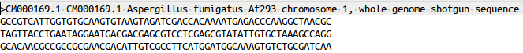
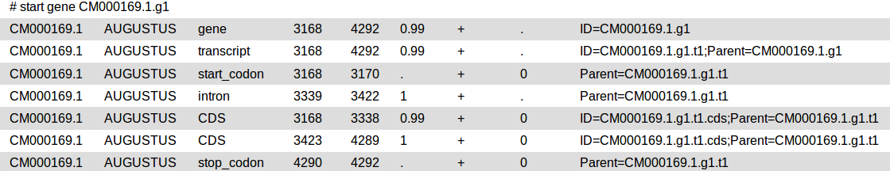
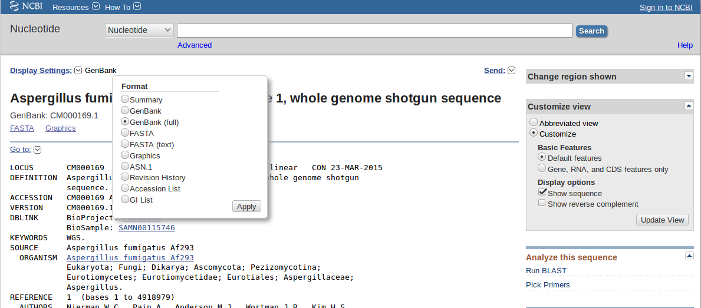
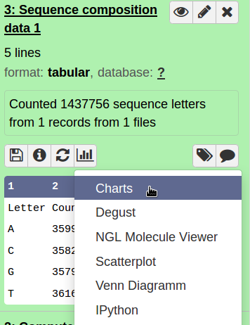
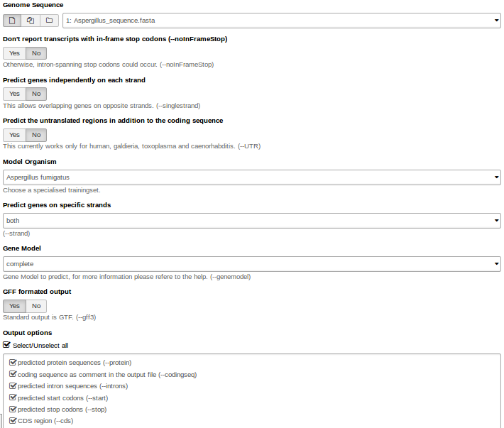
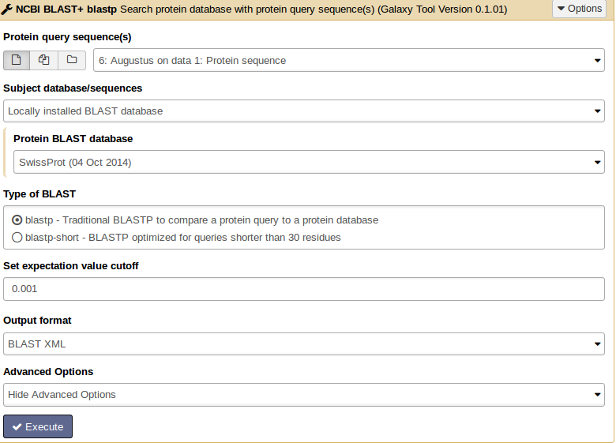
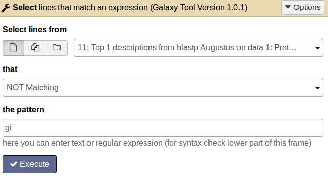
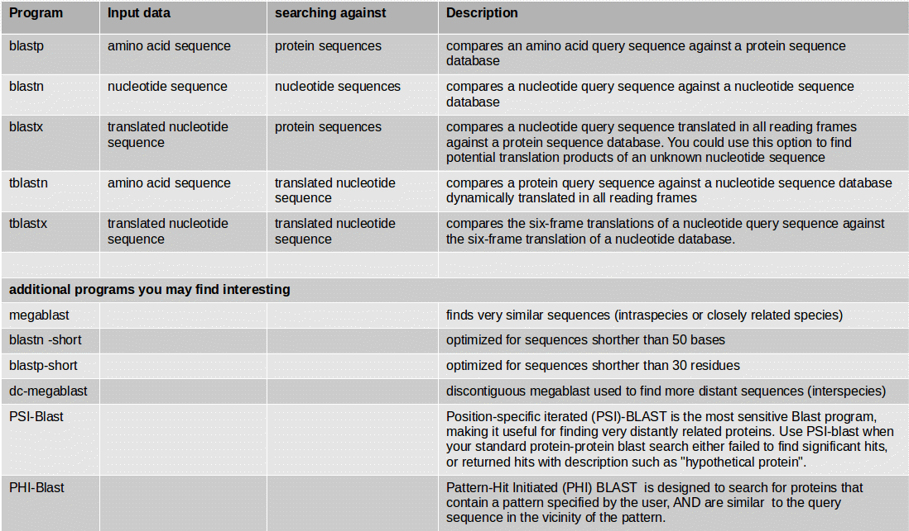
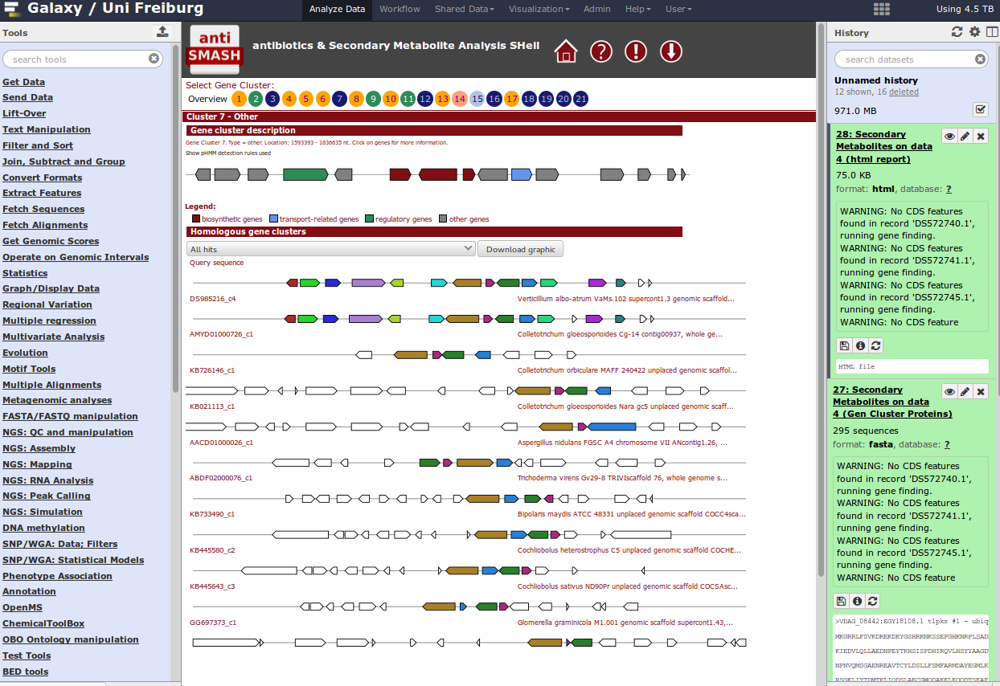

Overview
Questions
Objectives
Requirements
Time estimation:
Introduction
Genome annotation is the process of attaching biological information to sequences. It consists of three main steps:
- identifying portions of the genome that do not code for proteins
- identifying elements on the genome, a process called gene prediction, and
- attaching biological information to these elements.
Agenda
In this tutorial, we will deal with:
Introduction into File Formats
FASTA
DNA and protein sequences are written in FASTA format where you have in the first line a “>” followed by the description. In the second line the sequence starts.

GFF3
The general feature format (gene-finding format, generic feature format, GFF) is a file format used for describing genes and other features of DNA, RNA and protein sequences.

GENBANK
The genbank sequence format is a rich format for storing sequences and associated annotations.

Structural Annotation
For the genome annotation we use a piece of the Aspergillus fumigatus genome sequence as input file.
Sequence Features
First we want to get some general information about our sequence.
Hands-on: Sequence composition
- Count the number of bases in your sequence (compute sequence length)
- Check for sequence composition and GC content (geecee).
- Plot the sequence composition as bar chart.

Gene Prediction
At first you need to identify those structures of the genome which code for proteins. This step of annotation is called “structural annotation”. It contains the identification and location of open reading frames (ORFs), identification of gene structures and coding regions, and the location of regulatory motifs. Galaxy contains several tools for the structural annotation. Tools for gene prediction are Augustus (for eukaryotes and prokaryotes) and glimmer3 (only for prokaryotes).
We use Augustus for gene prediction.
- Use the genome sequence (FASTA file) as input.
- Choose the right model organism, gff format output.
- Select all possible output options.

Augustus will provide three output files: gff3, coding sequences (CDS) and protein sequences.
Question
How many genes are predicted?
Click to view answer
Check the output: augustus_output
{kind=link}
Use Aragorn for tRNA and tmRNA prediction.
- As input file use the Aspergillus genome sequence. You can choose the genetic code (e.g. bacteria).
Select the topology of your genome (circular or linear).
Are there tRNAs or tmRNAs in the sequence?
Tip:
read more about Aragorn here.
Functional Annotation
Similarity Searches (BLAST)
Functional gene annotation means the description of the biochemical and biological function of proteins. Possible analyses to annotate genes can be for example:
- similarity searches
- gene cluster prediction for secondary metabolites
- identification of transmembrane domains in protein sequences
- finding gene ontology terms
- pathway information
For similarity searches we use NCBI BLAST+ blastp to find similar proteins in a protein database.
As input file, select the protein sequences from Augustus.
- Choose the protein BLAST database SwissProt and the output format xml.

Parsing the xml output (Parse blast XML output) results in changing the format style into tabular.
What information do you see in the BLAST output?
From BLAST search results we want to get only the best hit for each protein.
For how many proteins we do not get a BLAST hit?

This file will be the input for more detailed analysis:
-
Interproscan is a functional prediction tool. Select all applications and run it on your protein file.
-
WolfPSort predicts eukaryote protein subcellular localization. Filter the result file for the best ranked localization hit. Use Filter data on any column using simple expressions with c4==1. The parameter c4==1 means: filter and keep all results where in column 4 is a “1”.
-
TMHMM finds transmembrane domains in protein sequences. The number of amino acids in transmembrane helices should be >18. This information can be found in column 3. Filter the result file c3>17.99.
-
BLAST2GO maps BLAST results to GO annotation terms.
BLAST Programs


If you have an organism which is not available in a BLAST database, you can use its genome sequence in FASTA file for BLAST searches “sequence file against sequence file”. If you need to search in these sequences on a regularly basis, you can create a own BLAST database from the sequences of the organism. The advantage of having a own database for your organism is the duration of the BLAST search which speeds up a lot.
NCBI BLAST+ makeblastdb creates a BLAST database from your own FASTA sequence file. Molecule type of input is protein or nucleotide.
Cock et al. (2015): NCBI BLAST+ integrated into Galaxy
Cock et al. (2013): Galaxy tools and workflows for sequence analysis with applications in molecular plant pathology
More Similarity Search Tools in Galaxy
- VSEARCH: For processing metagenomic sequences, including searching, clustering, chimera detection, dereplication, sorting, masking and shuffling. VSEARCH stands for vectorized search, as the tool takes advantage of parallelism in the form of SIMD vectorization as well as multiple threads to perform accurate alignments at high speed. VSEARCH uses an optimal global aligner (full dynamic programming Needleman-Wunsch), in contrast to USEARCH which by default uses a heuristic seed and extend aligner. This results in more accurate alignments and overall improved sensitivity (recall) with VSEARCH, especially for alignments with gaps.
Documentation for vsearch see here.
- Diamond: Diamond is a high-throughput program for aligning a file of short reads against a protein reference database such as NR, at 20,000 times the speed of Blastx, with high sensitivity.
Buchfink et al. (2015): Fast and sensitive protein alignment using Diamond.
- Kraken: Kraken BLAST is a highly scalable, extremely fast, commercial, parallelized implementation of the NCBI BLAST application.
Identification of Gene Clusters
For identification of gene clusters, antiSMASH is used. The tool uses genbank file as input files and predicts gene clusters. Output files are a html visualization and the gene cluster proteins.
antiSMASH analysis
Which gene clusters are identified?
When you have a whole genome antiSMASH analysis, your result may look like this:

At the end, you can extract a reproducible workflow out of your history. The workflow should look like this:

 Congratulations on successfully completing this tutorial!
Congratulations on successfully completing this tutorial!
This material is the result of a collaborative work. Thanks to all the contributors and the Galaxy Training Network!Please take a moment and provide your feedback on this tutorial. Your feedback will help guide and improve future revisions to this tutorial. Feedback Form
Feedback
Found a typo? Something is wrong in this tutorial? Edit it on GitHub.